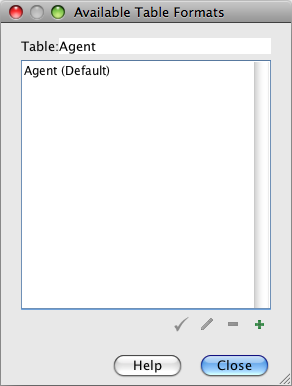
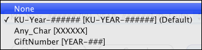
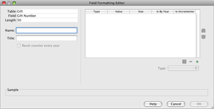

Schema refers to the many tables and fields that systematize the many dimensions and relationships of the data within biological collections. The Schema Configuration module is a highly functional, though somewhat complex, set of tools created to configure the Specify schema for individual discipline needs. Changes made in the Schema Configuration tool will affect all collections within a discipline and can be used to individualize Specify for each discipline.
Changes made within the Schema Configuration tool affect some very sensitive areas of the database and require the Specify application to shut down. For this reason, all tabs must be closed before the tool will open, and when changes are saved within the Schema Configuration tool the Specify application will shut down. It is a good practice to save all changes within any open tabs before opening the Schema Configuration.
The tools in the Schema Configuration provide the following functions:
Close all tabs before opening Schema Configuration. Open Schema Configuration by clicking System > Schema Configuration. The Schema Configuration tool (and menu) is only available to Administrators.
The Schema Configuration tool opens with the schema listed on the left side and the tools on the right. The top left pane titled 'Tables' lists all the tables in the Specify schema. The bottom left pane titled 'Fields' lists the fields for each table. Click a table to display the available fields. Many of the fields listed are related fields, which belong to other tables. This will be discussed in more detail later.
The available tools for the Tables are listed on the top right and the tools for Fields are listed on the bottom right.
The following tools within the Schema Configuration are the same for both tables and fields.
The first tool is Caption and is available for both Tables and Fields. Simply select a table or field from the appropriate list and type the new name into the Caption field. The new caption will appear on forms, in Query Creators and the Simple Search Configuration tool.
Tables and fields that are not used by a particular discipline can be hidden. This will remove them from the Query Creators list and Simple Search Configuration choices. This will not remove the fields from forms. Data can still be added to the forms in the hidden field and will be saved in the database. This tool is mainly used to clean the lists presented for creating queries and simple searches. The hidden fields will not be removed from previously saved queries or reports.
Edit Table / Field Description
Both the Tables and Fields have a description. This is useful when describing how fields and tables are used within individual disciplines. This is an editable field. These can be viewed in a form by double clicking on a field caption.
The following tools are available for tables only.
Tables can be formatted, or represented by at least one main field. These formats are used on forms and in search results as well as reports. Most tables are represented by only one field, (Collection Object shows the Catalog Number), but some are best represented by more than one field (Agent may be formatted to display last name, first name, middle initial).
It is important to note that Preferred Taxon, Geography, Chronostratigraphy and Lithostratigraphy fields use the Full Name as their format. This is configured in the Tree Definition.
Open the Table Formatting Editor by first choosing a table to format from the Tables list, then clicking the ... (dialog) button next to the Table Format field.
The first dialog that opens displays the name of the table, then displays any saved table formats for editing purposes.

Available Table Formats
Buttons at the bottom of the dialog offer the following:
Clicking the  or
or  button opens the Table Format Editor dialog.
button opens the Table Format Editor dialog.

Table Format Editor
There are two types of Table Formats, a 'Single display format' that links to one or more fields and a 'Display depends on value of field', which displays different results based on a conditional field.
The Single display format allows users to select fields from the Available Fields window to be used in the table format.
Display depends on value of field:
This type of format is useful when the data in one field sets a condition for another field. A good example is a Current Determination in Ichthyology. A Collection Object can have many Determinations, but only one can be marked as Current. Rather than displaying all Determinations the table can be formatted to only display the Current Determination.
First choose the Display depends on value of field button.
The window will change to include a Field Value and Display Format.
Then choose a conditional field by clicking the  button on the Pick List and choosing a field from the list.
button on the Pick List and choosing a field from the list.
Next, click the  (add) button at the bottom of the dialog. A ... (dialog) button will appear in the window.
(add) button at the bottom of the dialog. A ... (dialog) button will appear in the window.
Click the ... (dialog) button. The Format Editor described above will appear.
Once a Table Format has been created it will need to be selected from the pick list next to the Display Format caption.

Choose a Table Format
Tables with a one-to-many relationship to the primary table typically link multiple records to the primary table. Aggregating the related table will use the table format for each individual record and groups them together into one record. These are useful when displaying data on forms, in search results and on reports. For example, a Collection Object can have many Preparations. The results of a query of Collection Objects with Preparations will return formatted Preparations data aggregated together in one record, separated by semi colons.
Open the Aggregation Editor by first choosing a table to aggregate from the Tables list, then clicking the ... (dialog) button next to the Aggregation field.
The first dialog that opens displays the name of the table, then displays any saved aggregation formats for editing purposes.

Available Table Aggregations
Buttons at the bottom of the dialog offer the following:
Clicking the  (edit) or
(edit) or  (add) button opens the second aggregation editor dialog.
(add) button opens the second aggregation editor dialog.

Table Aggregation Editor
Table lists the name of the table being aggregated.
Once the Aggregation has been created the table will need to be selected from the Aggregation pick list next to the Aggregation caption.
Choose an Aggregation
At this time web links that are configured in the Schema Configuration also need to be added to individual forms by exporting the form set and editing the xml file for the form. Please refer to Web Links.
Fields have several properties that tables do not.
Type displays the type of field.
Length tells the length of the field. This is particularly useful to know when adding text to remarks fields.
Is Required refers to the required fields on forms. Any fields that are required by the application can not be edited to not be required, but fields that are not required can be changed to a required field. When entering data into a form with required fields the form changes can not be saved until all the required fields contain data.
Field Format Type offers choices for formatting string fields into either a Format (described below), Pick List or Web Link.
Creating a Format and editing an existing System Pick List will immediately be reflected within other Specify modules, such as forms and queries.
New, or User Defined Pick Lists and Web Links will not be automatically reflected within the forms in Specify. The User Defined Pick List and Web Links must be configured in the editor Forms will need to be exported, edited in XML to include the Pick List and Web Link, then imported back into Specify. Please refer to Import/Export Forms for more details.
Accession and Catalog Number formats are configured during the institution setup but there may be other fields that require either a number scheme or a format. A format allows a field to include sections for different data, such as static text, a date or in incremented number. Gift Number and Loan Number often have a unique format within collections. These can be formatted in the Schema Configuration tool, which will change the format for the entire discipline. In other words, if a Gift Number is formatted in the schema configuration all the collections within the discipline will be required to use the new format, which will display on the Gift form.
Field Formats can not be changed if data exists within the database in the format. In other words, before changing a field format all data using the old format must first be deleted.
Create a format for a field in the Field Formatting Editor, which is available in the Schema Configuration tool (System > Schema Configuration). The Schema Configuration tool is only available to Administrators.
Once in the Schema Configuration tool, choose a table and field from the Table and Field lists (on the left side of the tool) respectively.
Field formatting functions are configured using the Format Type section at the bottom of the Schema Configuration tool.
Choose Formatting from the pick list next to the Format Type caption.

Format Type
If a format exists choose it from the middle drop-down list.

List of existing Field Formats
Click the ... button to open the Field Formatting Editor.

Field Formatting Editor
The table, field and field length information is located on the top left.
Name is used within the application files. It should be text only and will not be displayed to the user anywhere else in the application.
Title will be displayed in any application format lists that are presented to the user.
Reset Counter Every Year will become enabled when a Numeric section that 'Is Incrementer' is added to the format (this is explained in more detail in the following text). Checking this box will start a new count each year.
A format can be made up of one or many sections. Begin creating a format by clicking the (add) button on the right side of the editor to add a section.
(add) button on the right side of the editor to add a section.
Next, choose the type of section to add.

Choose a Type
Numeric may only be numbers and can be auto incremented by checking the 'Is Incrementer' box and using Auto Numbering when entering data. When auto numbering Specify will start incrementing from the highest number present for the section within the database. A numeric section can be set between 1 and 10 characters in length. To start a new count for each year check the Restart counter every year box.
It is important to remember that field formats are implemented at a Discipline level and that formats that include a section that is incremented will include a numbering scheme that is shared by all Collections within the Discipline.
Alphanumeric may use both alphabetical characters a through z and numbers. A length field will appear which allows the section to be set between 1 and 10 characters in length.
Alpha may only be alphabetical characters a through z. A length field will appear which allows the section to be set between 1 and 10 characters in length.
Separator refers to a character that separates the various sections. Separator choices include - . / ' ' _ and are one character in length.
Year will automatically add the current year on a form, but can be edited.
Any char(acter) allows any alphabetical characters a through z, any number or any other keyboard character. A length field will appear which allows the section to be set between 1 and 10 characters in length.
Constant refers to any section that will remain constant and is not editable on a form. This type of section is useful when an institution code is part of a format. Type the characters for the constant in the text field labeled Text located under the Type box. The length of the Constant section limited to the number of characters remaining in the 50 character field length.
Once the section information is configured correctly add it to the format by clicking the  button.
button.
The section will appear in the window with the appropriate information in each of the columns.
Type refers to the Type of section that was chosen from the pick list.
Value shows the character used to represent the segment in the Sample at the bottom of the window.
Size refers to the number of characters chosen for the section. This is not applicable to the Separator or Year section types.
Is By Year refers only the Year section type.
Is Incrementer refers only to the Numeric section type that is incremented.
Reorder sections by clicking the  (reorder up) and
(reorder up) and  (reorder down) buttons on the right side of the editor.
(reorder down) buttons on the right side of the editor.
Delete unwanted sections by clicking the  (delete) button.
(delete) button.
Continue adding sections until the format is complete and displays correctly in the Sample window at the bottom of the editor.
Note: When manually entering a formatted number field, it is paramount that numbers be padded with 0's. For example, if 3 numbers are available in a numbering scheme (###) and the desired number is 1, then 001 must be entered. If only 1 is entered, then Specify will read this as 100. This will produce incorrect results in searches, queries and reports.
Once a field format has been configured it will need to be selected from the center pick list on the main Schema Configuration window.

Choose a Format